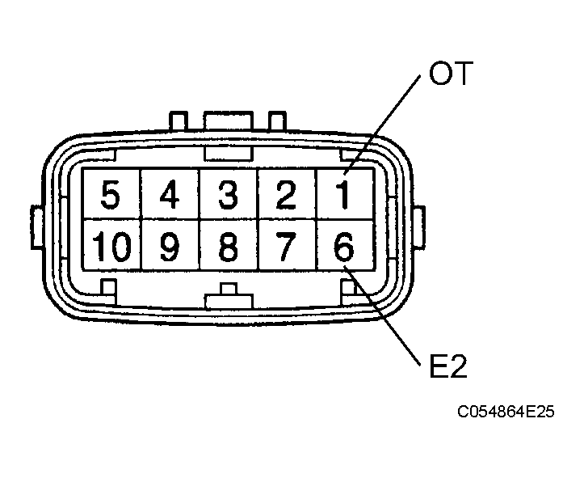
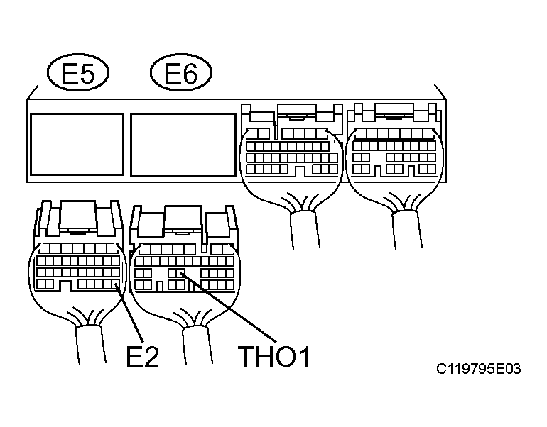

Inspection Procedure
WARNING: This page is about a different variant/trim than selected.
- INSPECT TRANSMISSION WIRE (ATF TEMPERATURE SENSOR)
- Disconnect the E1 wire connector.
- Measure the resistance of the transmission wire.
Standard resistance
TESTER CONNECTION SPECIFIED CONDITIONTester Connection Specified Condition 1 (OT) - 6 (E2) 79 Ω to 156 kΩ 1 (OT) - Body ground 10 kΩ or higher 6 (E2) - Body ground 10 kΩ or higher HINT:
If the resistance is out of the specified range of either of the ATF temperatures shown in the table below, the driveability of the vehicle may decrease.

Courtesy of © TOYOTA, LICENSE AGREEMENT TMS1002Standard resistance
SPECIFIED CONDITIONATF Temperature Specified Condition 10°C (68°F) 6.4 kΩ 110°C (230°F) 0.2 kΩ
NG: REPAIR OR REPLACE TRANSMISSION WIRE
OK: Go to Next Step
- CHECK WIRE HARNESS (TRANSMISSION WIRE - ECM)
- Disconnect the E5 and E6 ECM connectors.
- Measure the resistance of the wire harness side connectors.
Standard resistance
TESTER CONNECTION SPECIFIED CONDITIONTester Connection Specified Condition E6-24 (THO1) - E5-28 (E2) 79 Ω to 156 kΩ E6-24 (THO1) - Body ground 10 kΩ or higher E5-28 (E2) - Body ground 10 kΩ or higher
NG: REPAIR OR REPLACE HARNESS AND CONNECTOR

Courtesy of © TOYOTA, LICENSE AGREEMENT TMS1002OK: REPLACE ECM